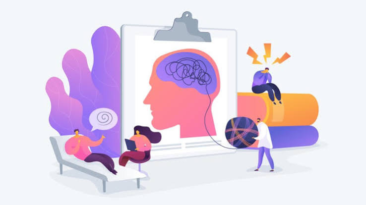
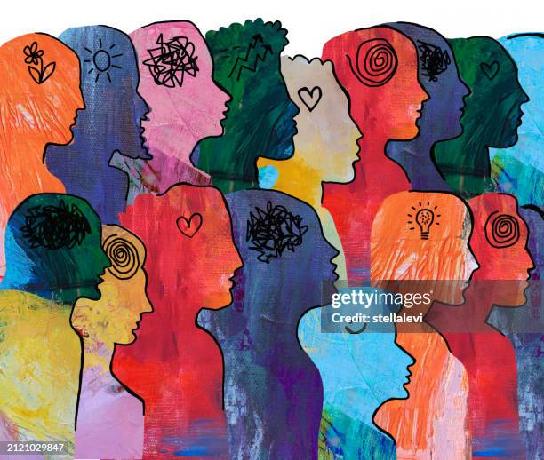
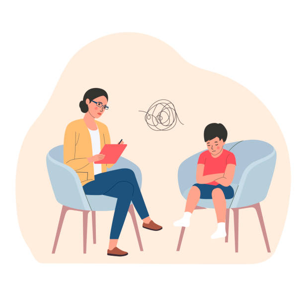
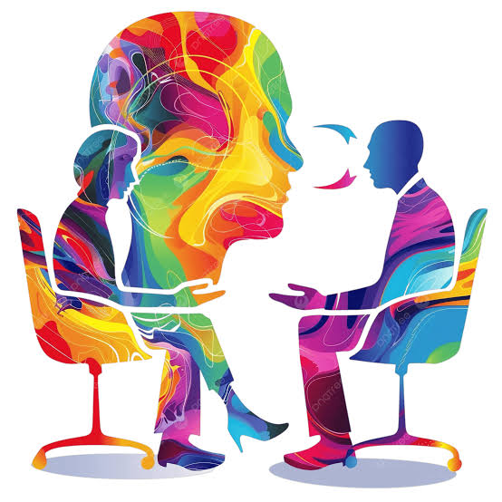
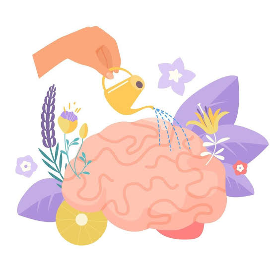
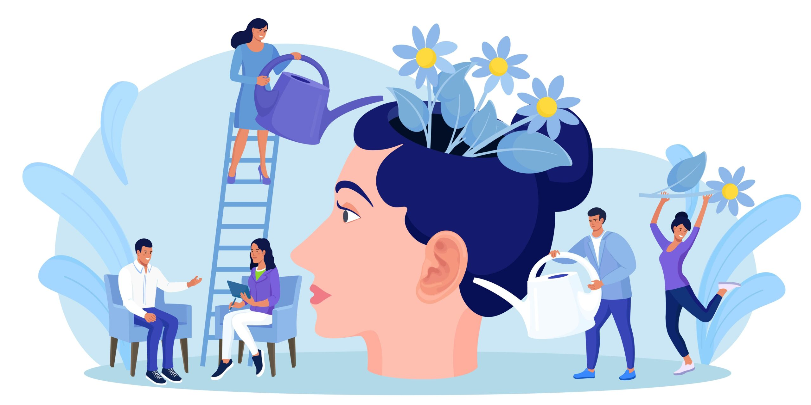

Atención y orientación para tu bienestar
Cada persona vive experiencias diferentes. Por eso, la orientación psicológica busca
comprender las necesidades individuales y ofrecer herramientas que favorezcan
el bienestar emocional.

Orientación emocional
Un espacio para reconocer, expresar y comprender tus emociones,
así como aprender a gestionarlas de manera saludable.

Manejo del estrés
Estrategias para afrontar las preocupaciones cotidianas,
identificar situaciones estresantes y desarrollar recursos
para manejarlas.

Acompañamiento en situaciones personales
Orientación para comprender dificultades personales,
cambios importantes y situaciones que pueden afectar
tu bienestar emocional.

Autoconocimiento y desarrollo personal
Herramientas para identificar fortalezas, comprender
pensamientos y desarrollar habilidades que favorezcan
el crecimiento personal.

Orientación para adolescentes y adultos
Acompañamiento adaptado a las necesidades y experiencias
de cada persona, según los servicios y la preparación
profesional disponibles.
